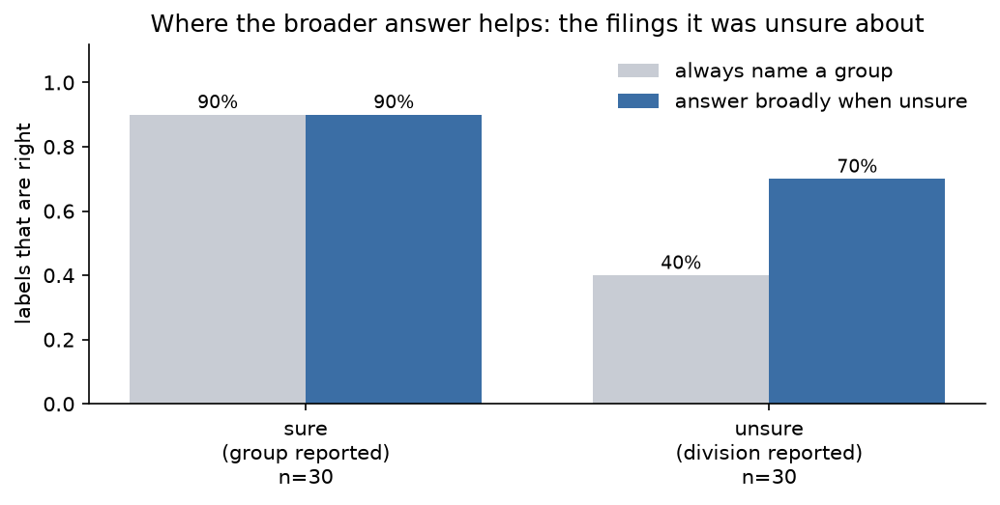

使用置信度进行分类
用每份一个 Choice 问题将 SEC 年报归入 75 个行业组之一，然后读取答案自身的置信度，决定是报告该行业组还是其上层的更宽泛大类。
每家向 SEC 提交年报的公司都会在其中描述自己的业务。我们按照标准工业分类（Standard Industrial Classification）对这些描述进行归类：75 个行业组，每份文档一个 Choice 问题。
大多数申报文件都容易。区域性银行就是区域性银行。有些则不然：一家刚卖掉自己两个业务板块之一的公司，或者一家初创公司描述的是它计划进入的业务而非它正在经营的业务。无论如何，模型都必须选出一个组，而困难案例的答案看起来与简单案例的答案毫无差别。区分困难案例与简单案例通常正是成本的去处：再来一个模型、额外的调用、人工审核。
而 Choice 本身已经告诉你了。它在给出获胜选项的同时还返回 confidence：当几乎全部概率都落在同一个选项上时该值高，当概率分散到多个选项上时该值低。这一个数字就把你能信任的答案与不能信任的答案区分开来。
拿到一个不可信的答案该怎么办，取决于你的标签体系。SIC 标签构成一个层级：行业组向上归入更宽泛的大类。这让补救几乎不花成本。当模型对行业组没有把握时，就报告它所属的大类。宽标签由窄标签直接推导而来，因此不需要第二次调用。
在这 60 份申报文件上，0.9 的置信度阈值把它们对半分开。有把握的那一半正确率是 90%；另一半是 40%。向上报告一层之后，那 40% 变成了 70%。最后我们会得到一个 classify() 函数，它返回一个标签以及该标签的精细程度，每份文档只需一次请求。
flowchart LR
doc["Item 1 'Business'<br/>from one 10-K"]
subgraph request["one request"]
q["Choice<br/>75 industry groups"]
end
sure{"confidence<br/>≥ 0.9?"}
grp["report the industry group<br/><i>e.g. 28</i>"]
div["report its division<br/><i>e.g. manufacturing</i>"]
doc --> request --> sure
%% both branches leave the test, so they share a rank and stack on their own
sure -- "yes" --> grp
sure -- "no" --> div准备
pip install ipython matplotlib "typesafe-sdk>=0.5.7" cooksafe --extra-index-url https://pypi.typesafe.ai/然后设置 TYPESAFE_API_KEY。每次 API 调用都会缓存到 json_cache.json，它随实战指南一起附带，因此重新渲染会回放已发布的数字而无需调用 API。删除该文件即可实时重跑全部内容。
下文中的数字来自 jev-1.12，采集于 2026-08-12。
import json
from collections import defaultdict
from pathlib import Path
import matplotlib
import matplotlib.pyplot as plt
from cooksafe import JsonCache, make_playground_link
from IPython.display import Markdown, display
from typesafe_sdk import Choice, TypeSafeClient
matplotlib.use("Agg") # headless render
import os # noqa: E402
TYPESAFE_MODEL = "jev-1.12"
CONFIDENT = 0.9 # above this the group is reported; below it, the division
client = TypeSafeClient(
api_key=os.environ.get(
"TYPESAFE_API_KEY", "cache-only"
), # keyless kernels replay the cache
base_url=os.environ.get("TYPESAFE_ENDPOINT"),
timeout=120.0,
)
json_cache = JsonCache(Path("json_cache.json"))构建分类体系的两个层级
sic_codes.tsv 是 SEC 发布、供申报企业从中挑选自己代码的行业列表，抓取于 2026-08-10：444 个四位数字代码，每个都带有一个行业名称。这些数字本身构成层级。前两位是主要组（major group，这里共 75 个，从 01 农业生产到 99 无法归类），而主要组的固定区间组成了十个大类（division），这是 SIC 最粗粒度的划分。
这两个层级都出自这一个文件，全程不涉及模型：把代码按前两位数字分组，再把那些数字映射到某个大类。
DIVISIONS = [
(1, 9, "agriculture, forestry and fishing"),
(10, 14, "mining"),
(15, 17, "construction"),
(20, 39, "manufacturing"),
(40, 49, "transportation, communications and utilities"),
(50, 51, "wholesale trade"),
(52, 59, "retail trade"),
(60, 67, "finance, insurance and real estate"),
(70, 89, "services"),
(91, 99, "public administration"),
]
INDUSTRIES: dict[str, str] = {}
for line in Path("sic_codes.tsv").read_text().splitlines()[1:]:
code, _office, title = line.split("\t")
INDUSTRIES[code] = title.lower()
GROUPS: dict[str, list[str]] = defaultdict(list)
for code in sorted(INDUSTRIES):
GROUPS[code[:2]].append(code)
def division(group: str) -> str:
number = int(group)
return next(name for low, high, name in DIVISIONS if low <= number <= high)
print(
f"{len(INDUSTRIES)} industries -> {len(GROUPS)} major groups -> {len(DIVISIONS)} divisions"
)
print(
f" group 35 = {division('35')} / {', '.join(INDUSTRIES[c] for c in GROUPS['35'][:3])} ..."
)444 industries -> 75 major groups -> 10 divisions
group 35 = manufacturing / engines & turbines, farm machinery & equipment, lawn & garden tractors & home lawn & gardens equip ...Choice 问题需要为每个选项提供一段描述，而组自己的名称并不总是存在：SEC 列表中 75 个组里有 42 个带有伞形标题，其余的则没有。因此每个组都用它内部的行业来描述——反正阅读申报文件的人用来比对的也正是这些东西。
MAX_NAMED = (
8 # industries listed per group; enough to characterise it without a wall of text
)
def describe(group: str) -> str:
umbrella = INDUSTRIES.get(f"{group}00")
inside = [INDUSTRIES[c] for c in GROUPS[group] if c != f"{group}00"][:MAX_NAMED]
listed = "; ".join(inside)
return (
f"{umbrella} — includes: {listed}"
if umbrella and listed
else (umbrella or listed)
)
print(f"group 20: {describe('20')[:150]}")
print(f"\ngroup 65: {describe('65')[:150]}")group 20: food and kindred products — includes: meat packing plants; sausages & other prepared meat products; poultry slaughtering and processing; dairy product
group 65: real estate — includes: real estate operators (no developers) & lessors; operators of nonresidential buildings; operators of apartment buildings; less这些申报文件
filings.jsonl 收录 60 份年报（10-K），每份都裁剪到 Item 1 “Business”，也就是公司描述自身业务的那一节，行业代码唯一相关的部分。它们的年份跨度为 1993–2024，篇幅从 700 到 2,200 词不等。每份都带有申报企业选定的 SIC 代码，以及在 EDGAR 上查到它所需的存取号（accession number）。
在任何准确率数字之前，先要弄清这个标签从何而来。它是自行申报的：编制申报文件的人一次性选定它，而当公司卖掉了代码所指的业务却保留代码时，它就会过时。这 60 份是经过筛选的——只保留其文本本身能支撑所带代码的申报文件，因此这里的数字衡量的是这套做法本身，而不是 EDGAR 元数据的现状。
FILINGS = [json.loads(line) for line in Path("filings.jsonl").read_text().splitlines()]
example = FILINGS[7]
print(
f"{len(FILINGS)} filings, {sum(f['words'] for f in FILINGS) // len(FILINGS)} words on average"
)
print(f"\n{example['id']} (filed {example['year']}, accession {example['accession']}):")
print(f" {example['text'][:230]}...")
print(f" filer's code: {example['sic']} {INDUSTRIES[example['sic']]}")60 filings, 1438 words on average
1389870_2008 (filed 2008, accession 0001079974-09-000155):
Item 1. DESCRIPTION OF BUSINESS. NARRATIVE DESCRIPTION OF THE BUSINESS Across America Financial Services, Inc. is a corporation which was formed under the laws of the State of Colorado on December 1, 2005. Until March 23, 2007, we...
filer's code: 6163 loan brokers问一个 Choice 问题，并读取置信度
一个 Choice 问题，选项就是那 75 个组。整个分类体系装得进一个请求：Choice 在大约 240 个选项以内都能可靠工作，75 远在范围之内。
答案返回时带有 choice（获胜的组）、probabilities（75 个选项各自的权重）和 confidence（表示这一分布有多集中）。这套做法读取的是 confidence，而不是获胜者自身的概率。获胜者 0.45 而第二名 0.44，与获胜者 0.45 而其余权重稀薄地散开，是两种不同的情形，把它们区分开来的正是 confidence。
QUESTION = (
"Which broad industry does this company operate in? Judge the company's own operations "
"as this filing describes them."
)
def questions() -> dict:
return {
"group": Choice(
instructions=QUESTION,
criteria={group: describe(group) for group in sorted(GROUPS)},
)
}
@json_cache
def ask(filing_id: str, text: str) -> dict:
response = client.system_one(
state=text, questions=questions(), model=TYPESAFE_MODEL
)
answer = response.answers["group"]
return {
"group": answer.choice,
"confidence": answer.confidence,
"probabilities": dict(answer.probabilities),
}有把握时返回组，没把握时返回其大类
下面这四行就是整套做法。置信度达到 0.9 或以上时，答案按行业组报告；低于该值时，同一答案按该组所在的大类报告。
每份申报文件仍然都会返回一个可用的标签。模型无法自信分类的那份会向上返回一层，而不是被丢弃或继续传下去。如果大类对你的应用来说太粗、无法据此采取行动，这个分支就是把它交给人工处理的地方。
def classify(filing: dict) -> dict:
answer = ask(filing["id"], filing["text"])
sure = answer["confidence"] >= CONFIDENT
return {
"level": "group" if sure else "division",
"label": answer["group"] if sure else division(answer["group"]),
"confidence": answer["confidence"],
"group": answer["group"],
}
def show(filing: dict) -> None:
result = classify(filing)
named = describe(result["group"]).split(" — ")[0][:46]
print(
f" {filing['id']:>13} conf {result['confidence']:.2f} -> {result['level']:<8} "
f"{result['label']:<14} (group {result['group']}: {named})"
)
print("three filings the model was sure about:")
for f in sorted(FILINGS, key=lambda f: -ask(f["id"], f["text"])["confidence"])[:3]:
show(f)
print("\nthree it was not:")
for f in sorted(FILINGS, key=lambda f: ask(f["id"], f["text"])["confidence"])[:3]:
show(f)three filings the model was sure about:
310158_1996 conf 1.00 -> group 28 (group 28: chemicals & allied products)
33416_1998 conf 1.00 -> group 63 (group 63: life insurance; accident & health insurance; h)
352541_1996 conf 1.00 -> group 49 (group 49: electric, gas & sanitary services)
three it was not:
1372167_2013 conf 0.22 -> division manufacturing (group 38: search, detection, navagation, guidance, aeron)
1398633_2009 conf 0.23 -> division wholesale trade (group 50: wholesale-durable goods)
46653_1999 conf 0.29 -> division services (group 87: services-engineering, accounting, research, ma)这些置信度与每份文件被分类的难度相吻合。三个 1.00 的分别是一家制药商、一家人寿保险公司和一家公用事业公司；这三家在纸面上都是控股公司，但每家都有一个主导业务，且申报文件直接点明了它。垫底的三个更难，原因可以顺着文本读出来。其中两个是开发阶段公司，描述的是自己打算开展的业务（Nevaeh “打算以软件开发者的身份运营”，Barricode 是 “为进入计算机安全软件行业而设立的”），第三个原本有两个业务板块，并在申报前几周卖掉了其中一个。这三份返回的是大类而非组。
classify() 就是整套做法。把 ask() 指向你自己的文档，并为自己的分类体系重写 describe()，其余部分原样通用。
更宽泛的答案换来什么
全部 60 份申报文件，以每位申报者选定的代码为标准打分，比较两种策略：每次都报出一个组，或每当置信度落在 0.9 以下就报告大类。
def correct(filing: dict, result: dict) -> bool:
gold_group = filing["sic"][:2]
if result["level"] == "group":
return result["label"] == gold_group
return result["label"] == division(gold_group)
results = [(f, classify(f)) for f in FILINGS]
sure = [(f, r) for f, r in results if r["level"] == "group"]
unsure = [(f, r) for f, r in results if r["level"] == "division"]
forced = sum(r["group"] == f["sic"][:2] for f, r in results)
broadened = sum(correct(f, r) for f, r in results)
print(f"forced to name a group every time {forced}/{len(results)} right")
print(
f" of those, the {len(sure)} it was sure about "
f"{sum(r['group'] == f['sic'][:2] for f, r in sure)}/{len(sure)} right"
)
print(
f" and the {len(unsure)} it was not "
f"{sum(r['group'] == f['sic'][:2] for f, r in unsure)}/{len(unsure)} right"
)
print(
f"\nletting it answer coarsely when unsure {broadened}/{len(results)} useful answers"
)forced to name a group every time 39/60 right
of those, the 30 it was sure about 27/30 right
and the 30 it was not 12/30 right
letting it answer coarsely when unsure 48/60 useful answers模型有把握的地方，它报出的组十次里有九次是对的。在没把握的地方，硬报一个组错的比对的多，正确率只有 40%。把同样的答案改按大类报告，则能把它们提到 70%。
图表把两种策略并排放在一起，并按模型是否有把握加以区分。
labels = ["sure\n(group reported)", "unsure\n(division reported)"]
forced_split = [
sum(r["group"] == f["sic"][:2] for f, r in sure) / len(sure),
sum(r["group"] == f["sic"][:2] for f, r in unsure) / len(unsure),
]
broad_split = [
sum(correct(f, r) for f, r in sure) / len(sure),
sum(correct(f, r) for f, r in unsure) / len(unsure),
]
fig, ax = plt.subplots(figsize=(7, 3.6))
x = range(len(labels))
ax.bar(
[i - 0.19 for i in x],
forced_split,
0.38,
label="always name a group",
color="#c8ccd4",
)
ax.bar(
[i + 0.19 for i in x],
broad_split,
0.38,
label="answer broadly when unsure",
color="#3b6ea5",
)
for i, (a, b) in enumerate(zip(forced_split, broad_split)):
ax.text(i - 0.19, a + 0.02, f"{a:.0%}", ha="center", fontsize=9)
ax.text(i + 0.19, b + 0.02, f"{b:.0%}", ha="center", fontsize=9)
ax.set_xticks(list(x))
ax.set_xticklabels(
[f"{lab}\nn={n}" for lab, n in zip(labels, [len(sure), len(unsure)])]
)
ax.set_ylabel("labels that are right")
ax.set_ylim(0, 1.12)
ax.set_title("Where the broader answer helps: the filings it was unsure about")
ax.legend(frameon=False, loc="upper right")
ax.spines[["top", "right"]].set_visible(False)
plt.tight_layout()
display(fig)
在 Playground 中打开
这个分享链接里装着一份申报文件和那个 75 选项的问题，不用写任何代码，你就能看到分布以及它产生的置信度。
playground_link = make_playground_link(
example["text"], questions(), models=[TYPESAFE_MODEL]
)
display(
Markdown(
f"🔗 [Open the filing + question in the TypeSafe playground]({playground_link})"
)
)